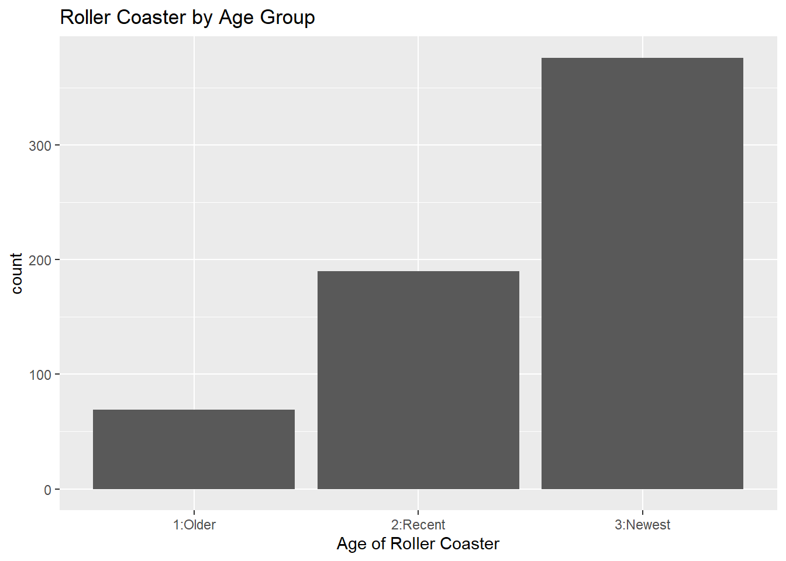
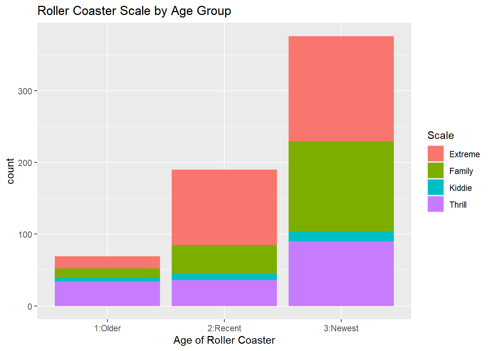
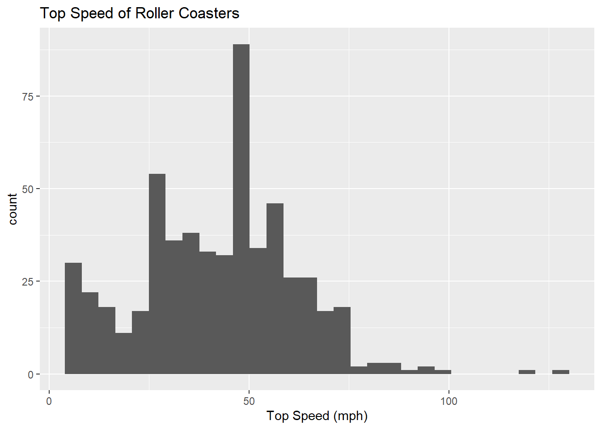
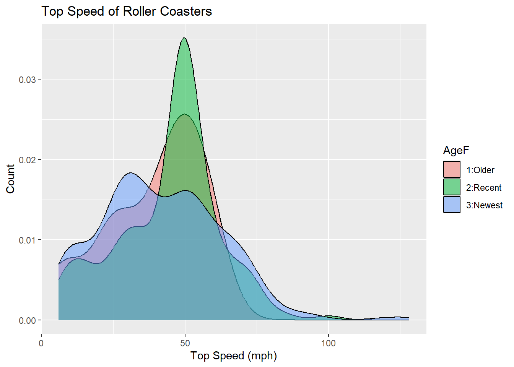
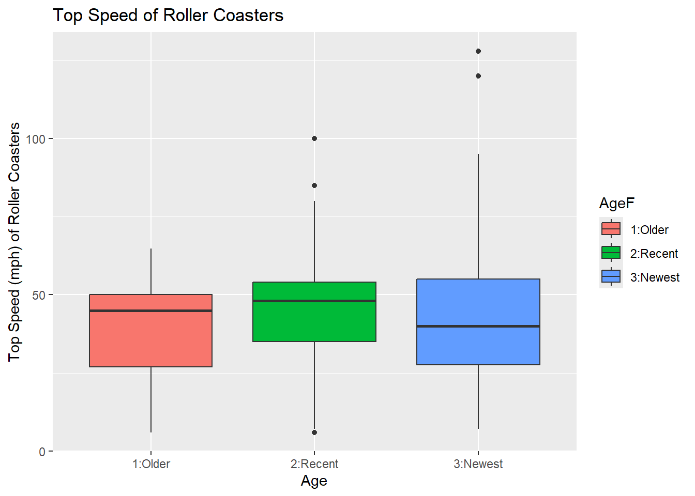
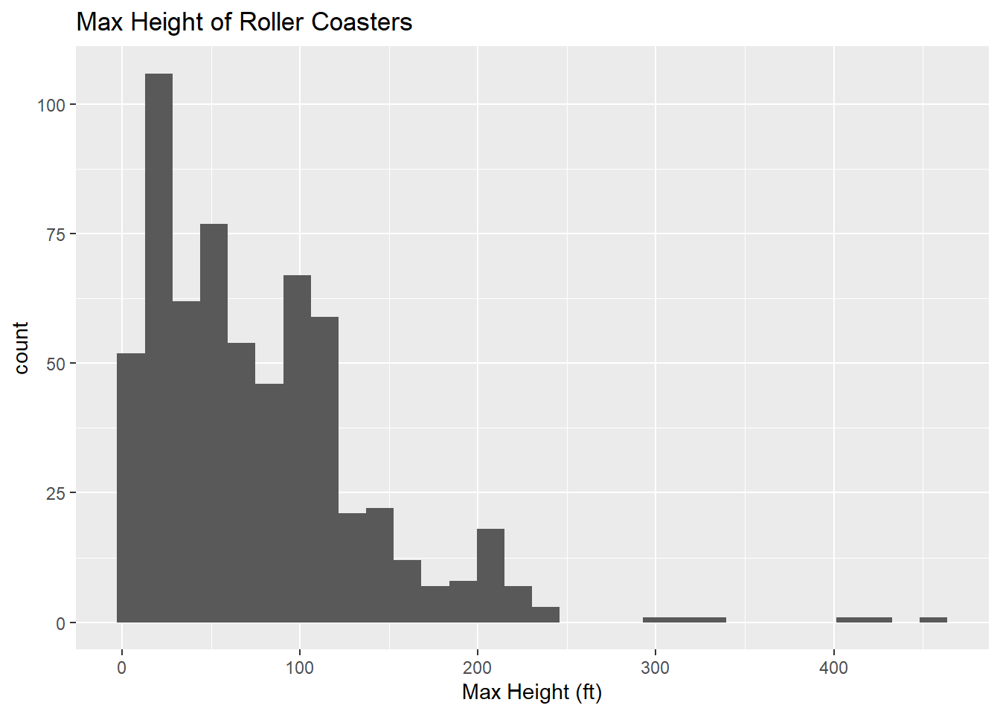
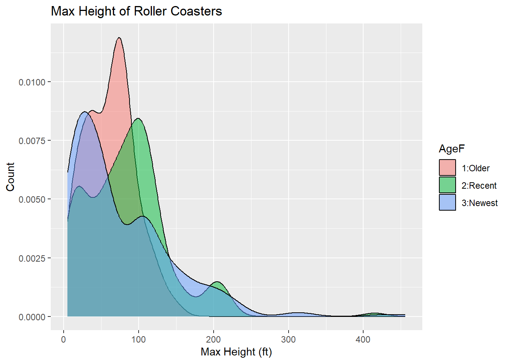
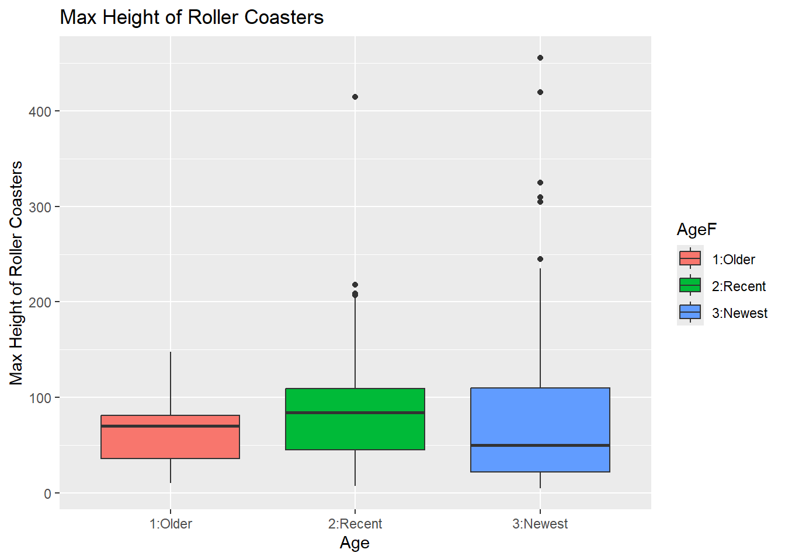
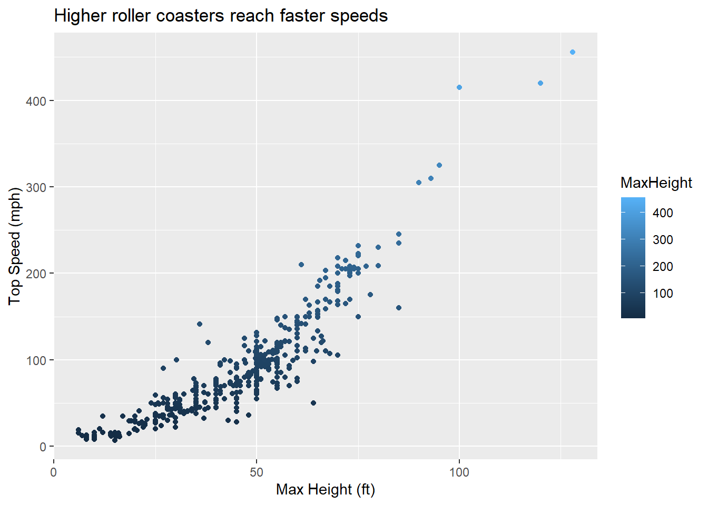
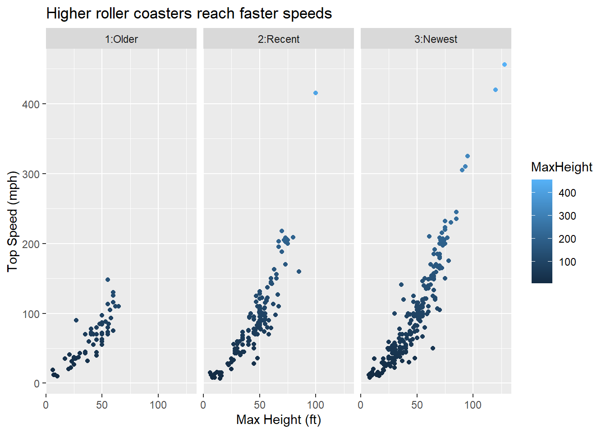

Rows: 635 Columns: 21
── Column specification ────────────────────────────────────────────────────────
Delimiter: ","
chr (12): Coaster, Park, City, State, Census Region, AgeGroup, Scale, Type, ...
dbl (9): Year Opened, TopSpeed, MaxHeight, Drop, Length, Duration, # of Inv...
ℹ Use `spec()` to retrieve the full column specification for this data.
ℹ Specify the column types or set `show_col_types = FALSE` to quiet this message.
#creating graphsg1 <-ggplot(data=roller_data, aes(x = AgeF))g1 +geom_bar() +labs(title ="Roller Coaster by Age Group",x ="Age of Roller Coaster")

g2 <-ggplot(data=roller_data, aes(x = AgeF, fill = ScaleF))g2 +geom_bar() +labs(title ="Roller Coaster Scale by Age Group", x ="Age of Roller Coaster") +scale_fill_discrete("Scale")

#numeric variables with means and sdroller_data |>summarize(mean_TopSpeed =mean(TopSpeed, na.rm =TRUE), sd_TopSpeed =sd(TopSpeed, na.rm =TRUE), mean_MaxHeight =mean(MaxHeight, na.rm =TRUE), sd_MaxHeight =sd(MaxHeight, na.rm =TRUE))
#correlation between Top speed and Max heightroller_data |>drop_na(TopSpeed, MaxHeight)|>summarize(corr =cor(TopSpeed, MaxHeight))
# A tibble: 1 × 1
corr
<dbl>
1 0.904
#correlation for all numericc roller_data |>select(`Year Opened`, TopSpeed, MaxHeight, Drop, Length, Duration, `# of Inversions`) |>drop_na() |>cor()
Year Opened TopSpeed MaxHeight Drop Length
Year Opened 1.00000000 0.07523024 0.1744486 0.1488023 -0.05230856
TopSpeed 0.07523024 1.00000000 0.8995804 0.9106544 0.72958067
MaxHeight 0.17444865 0.89958035 1.0000000 0.9588304 0.60634255
Drop 0.14880229 0.91065440 0.9588304 1.0000000 0.64206458
Length -0.05230856 0.72958067 0.6063425 0.6420646 1.00000000
Duration 0.01910470 0.33969411 0.2666018 0.2665382 0.50693203
# of Inversions 0.16157407 0.33770901 0.3102168 0.2957917 0.19466332
Duration # of Inversions
Year Opened 0.0191047 0.1615741
TopSpeed 0.3396941 0.3377090
MaxHeight 0.2666018 0.3102168
Drop 0.2665382 0.2957917
Length 0.5069320 0.1946633
Duration 1.0000000 0.1094986
# of Inversions 0.1094986 1.0000000
#numeric graphs with top speedg3 <-ggplot(roller_data, aes(x = TopSpeed)) g3 +geom_histogram() +labs(title ="Top Speed of Roller Coasters", x ="Top Speed (mph)")
`stat_bin()` using `bins = 30`. Pick better value `binwidth`.
Warning: Removed 74 rows containing non-finite outside the scale range
(`stat_bin()`).

g3 +geom_density(alpha =0.5, aes(fill = AgeF))+labs(title ="Top Speed of Roller Coasters", x ="Top Speed (mph)", y ="Count")
Warning: Removed 74 rows containing non-finite outside the scale range
(`stat_density()`).

g3 +geom_boxplot(aes(x = AgeF, y = TopSpeed, fill = AgeF)) +labs(title ="Top Speed of Roller Coasters", x ="Age", y ="Top Speed (mph) of Roller Coasters")
Warning: Removed 74 rows containing non-finite outside the scale range
(`stat_boxplot()`).

#numeric graphs with max heightg4 <-ggplot(roller_data, aes(x = MaxHeight)) g4 +geom_histogram() +labs(title ="Max Height of Roller Coasters", x ="Max Height (ft)")
`stat_bin()` using `bins = 30`. Pick better value `binwidth`.
Warning: Removed 8 rows containing non-finite outside the scale range
(`stat_bin()`).

g4 +geom_density(alpha =0.5, aes(fill = AgeF))+labs(title ="Max Height of Roller Coasters", x ="Max Height (ft)", y ="Count")
Warning: Removed 8 rows containing non-finite outside the scale range
(`stat_density()`).

g4 +geom_boxplot(aes(x = AgeF, y = MaxHeight, fill = AgeF)) +labs(title ="Max Height of Roller Coasters", x ="Age", y ="Max Height of Roller Coasters")
Warning: Removed 8 rows containing non-finite outside the scale range
(`stat_boxplot()`).

g5 <-ggplot(roller_data |>drop_na(TopSpeed, MaxHeight), aes(x = TopSpeed, y = MaxHeight, color = MaxHeight)) g5 +geom_point() +labs(title ="Higher roller coasters reach faster speeds", x ="Max Height (ft)", y ="Top Speed (mph)")

#faceting with 1 categorical variableg5 +geom_point() +labs(title ="Higher roller coasters reach faster speeds", x ="Max Height (ft)", y ="Top Speed (mph)") +facet_wrap(~AgeF)

#faceting with 2 categorical variablesg5 +geom_point() +labs(title ="Higher roller coasters reach faster speeds", x ="Max Height (ft)", y ="Top Speed (mph)") +facet_wrap(~AgeF +~ScaleF)